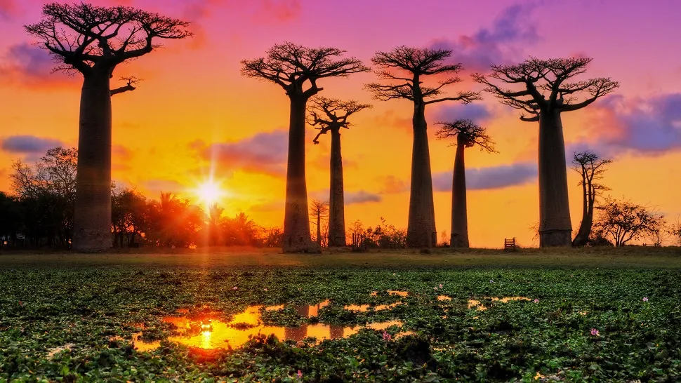
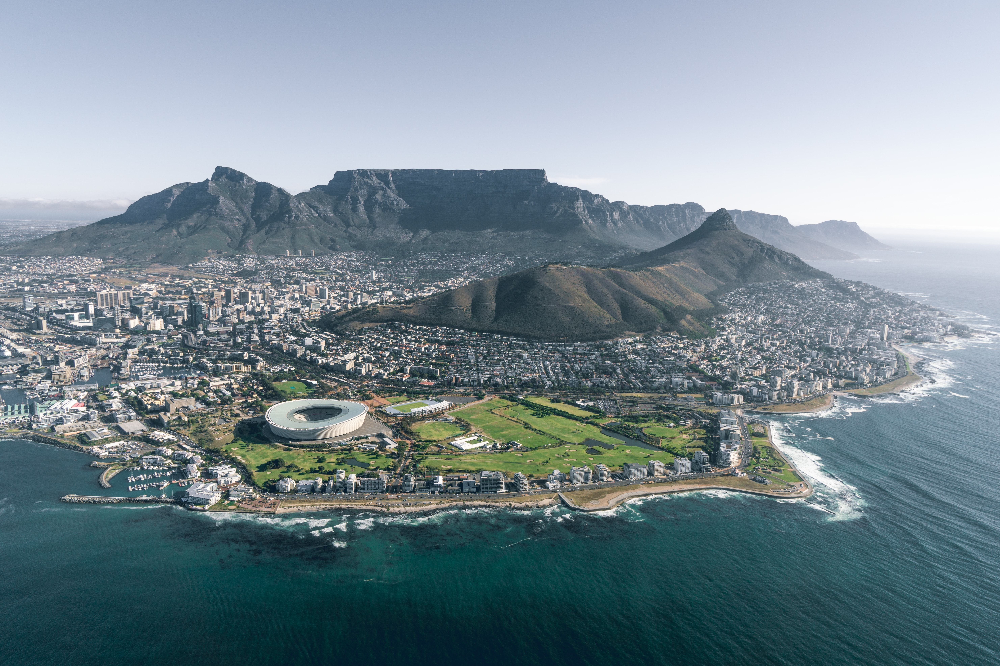
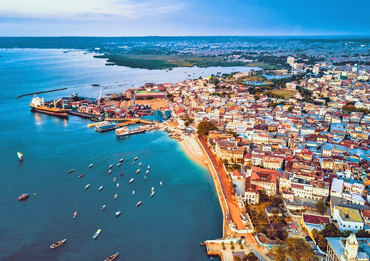

1. Madagascar

biggest island in the Indian Ocean, Madagascar is famous for its unique wildlife and biodiversity. With breathtaking views of nature, white sand beaches, stunning rainforest and delicious local food, this spot offers an unforgettable, once-in-a-lifetime experience. Madagascar is one of the world’s most unique countries – 5% of all known animal and plant species are found here alone. Weird and wonderful, Madagascar is easily one of the most exotic places you can visit. It is a kaleidoscope of landscapes – there are canyons, limestone karsts, cascading rice paddies, forests, mountains and beaches. Madagascar has some incredible beaches. Nosy Be is Madagascar’s top beach destination and has all the ingredients for the perfect beach getaway. Expect soft white sand, bright blue waters, sunny weather, snorkeling, diving, sailing and delicious seafood. All of Madagascar’s beaches have an undeniable feeling of being untouched and unspoiled, a rare occurrence and one to treasure. Madagascar has over 15,000 plant species, of which 80% are endemic to the island. Madagascar is called the home of the Baobab, with six species of the global total nine being endemic to the island. In the semi-arid regions in the south, they form a vast forest with some of the trees reaching 30 metres (98 feet) in height and 9 metres (30 feet) in circumference. Madagascar cuisine has an arsenal of aromatic flavourings – red-hot pepper paste with ginger and garlic, spicy green chili, and hot pickled fruit, such as mango, lemon, carrot or tomato. Seafood is also prominent.
2. South Africa

South Africa is full of adventure, history, wildlife and great food. Here are my top ten reasons you need to visit South Africa. South Africa’s top tourist destination has lots of beautiful coast lines and beaches near by, many whale watching tours, amazing scenery, and it has a walkable waterfront area with tons of great restaurants and shopping and more. South African cuisine has a lot of outside influences like from Europe and Asia from colonialism times. They have some of the tastiest meats in the world and venture outside of the typical beef and pork. Ostrich is found on many menus as is springbok and if you are lucky you might even get to enjoy Kudu. They enjoy a good BBQ aka braii and one of the meats I liked most was biltong, which is similar to beef jerky. South Africa is also big on beer production with their SAB World of Beer tour in Johannesburg said to be the top tourist attraction in the country. South Africa has a large tumultuous history and is one that people should learn about and understand if visiting. In Johannesburg you can visit the Apartheid Museum, Liliesleaf Museum and the country’s Constitutional Court to educate yourself on its past. South Africa is one of the very few places on Earth where you're able to tick off all of the Big 5 (elephant, buffalo, rhino, lion and leopard) in one day – arguably one of the best reasons to visit South Africa.
3. Tanzania

Tanzania is Africa's visual masterpiece. It is a country of natural splendour, astounding wildlife, seductive beaches, charming ancient towns, archaeological sites and geological wonders. Africa's highest mountain, Mount Kilimanjaro, rises from lush, grassy plains and towers over the land. Tanzania is the untamed half of east Africa, the raw safari experience that first drew explorers from around the world, home to endless savannah, volcanic mountains, the Great Migration and the towering walls of the Ngorongoro Crater. The east coast of Tanzania is blessed with the dazzling white beaches and warm waters of the Indian Ocean, home to world-class scuba diving and thrilling deep sea fishing. Colourful and exotic, Zanzibar fires the imagination with its beautiful scenery and fascinating history as a spice port. Now a UNESCO World Heritage Site, the island’s ancient capital of Stone Town hides its singular character and distinct charm within a labyrinth of winding alleyways and ornate doorways. The most famous of all Tanzania’s safari areas and often acting the link between the exceptional experiences that the country can offer is the fabled Serengeti National Park, its endless plains home to abundant game and site of the annual Great Migration of over a million wildebeest and zebra. Dubbed the Greatest Show on Earth, this fascinating spectacle moves continually through the Serengeti, across the borders to Kenya’s Masai Mara and back down again. Its endless cycle of life and death enthrals first time visitors and lifelong safari fanatics alike.